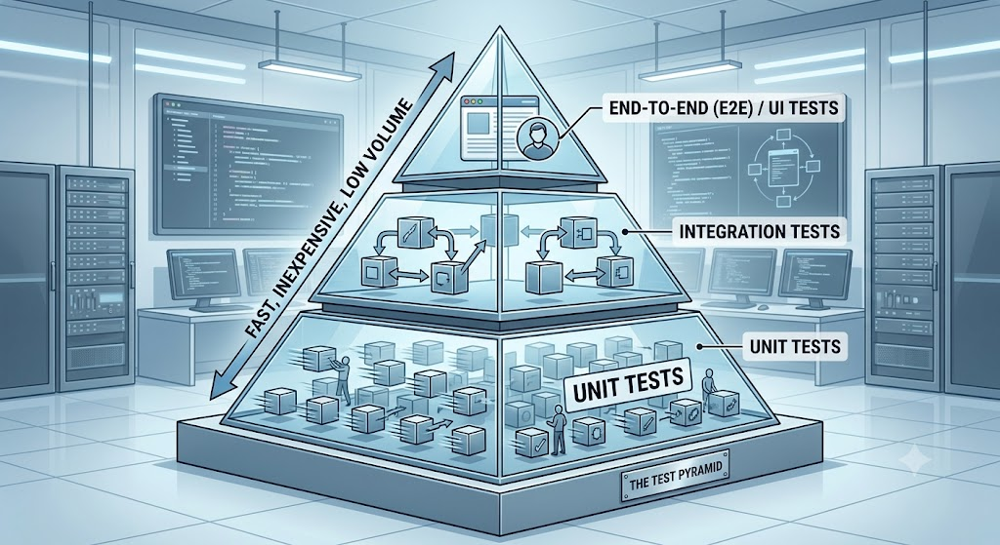
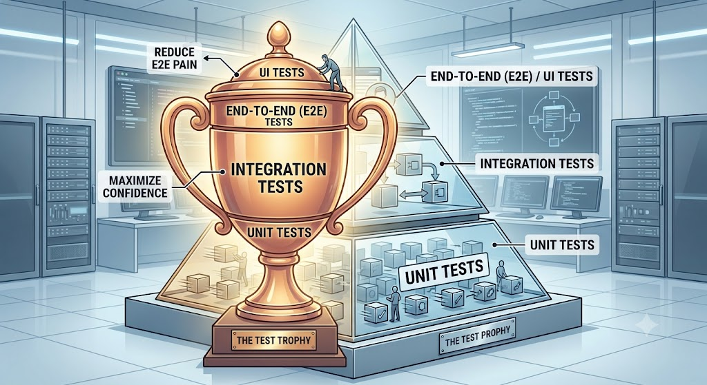

Test Levels, Test pyramid
#Brief Topic Summary
The topic of Test Levels (Levels of Testing) concerns the division of testing activities into logical phases that usually correspond to development phases and levels of software architecture. Each level has a different objective, a different granularity, and reveals different types of defects. Concepts such as the Testing Pyramid and the more recent Testing Trophy then define the test strategy – that is, the quantity and types of tests that should be implemented at each level to achieve a balance between feedback speed, test reliability, and maintenance costs. This topic is essential for a software architect because the architectural design directly determines whether, and how easily, the system can be tested at each level.
#Definitions and Basic Concepts
#Test Levels (Levels of Testing)
- Definition: A group of testing activities that are organized and managed together and are tied to specific responsibilities and phases in a project. They are normally divided into Unit (component), Integration, System, and Acceptance testing.
- Significance in architecture: They follow the level of design abstraction – from the internal logic of functions (Unit), through module interactions (Integration), to the overall external behavior of the architecture (System).
- Significance in testing: They enable efficient detection of defects as close as possible to their origin. They prevent duplicate work by clearly defining the boundaries of "what is tested where".
- Typical mistake or misunderstanding: Attempting to test complex business logic exclusively through cumbersome system (UI) tests instead of using low-level unit tests.
#Unit Testing (Component / Unit Testing)
- Definition: Testing the smallest parts of a software system that can be tested in isolation (for example, functions and classes). These tests are fast, run frequently, and do not rely on external dependencies (databases, APIs).
- Significance in architecture: They serve as the first indicator of code quality ("Building the product right"). They enforce a maintainable design – untestable code is often an indicator of excessive coupling (tight coupling).
- Significance in testing: They form the base of the testing pyramid. They provide developers with immediate feedback within milliseconds.
- Typical mistake or misunderstanding: Failing to understand that a unit test requires the use of stubs, mock objects, or test harnesses for isolation.
#Integration Testing (Integration Testing)
- Definition: Testing focused on interactions and communication between individual components or systems. We distinguish between Component integration testing (assembling units together) and System integration testing (connecting independent systems into a system of systems).
- Significance in architecture: It verifies the correctness of interfaces (API, HSI - Hardware/Software Interface) and contracts between subsystems.
- Significance in testing: It detects errors in data and control flows (dataflow, workflow) that cannot be revealed at the level of isolated unit tests.
- Typical mistake or misunderstanding: A missing integration strategy (Big-Bang), in which everything is connected at once and the fault cannot be localized.
#Testing Pyramid (Testing Pyramid)
- Definition: A framework and mental model that visualizes the optimal distribution of tests: a broad base of fast unit tests, a middle layer of integration tests, and a narrow top of end-to-end (E2E) / UI tests.
- Significance in architecture: The architecture must be designed to support massive parallelization and isolation at the lowest level (the broad base of the pyramid).
- Significance in testing: It defines a strategy that balances speed, cost, and reliability. As we move up the pyramid, tests become slower, more brittle, and more expensive to maintain.
- Typical mistake or misunderstanding: Ignoring the pyramid and creating an "ice cream cone" (see below).

#Testing Trophy (Testing Trophy)
- Definition: A modern alternative to the testing pyramid that shifts the main emphasis to the integration test layer and uses static analysis as its base. Structure: Static code analysis (bottom), Unit tests (smaller), Integration tests (main focus/body of the trophy), E2E tests (minimal top).
- Significance in architecture: Suitable for modern distributed systems and web frontends, where isolated unit tests often do not provide sufficient value and the real risk lies in the connections between parts.
- Significance in testing: It responds to situations in which unit tests require too much mocking, thereby losing their ability to provide meaningful information about the actual behavior of the system.
#

#Common Mistakes and Anti-Patterns
Test strategy mistake: The "Ice Cream Cone" anti-pattern (Ice Cream Cone)
- Why it is a problem: This is an inversion of the testing pyramid. The project has an enormous number of expensive and fragile E2E/UI tests, few integration tests, and almost no unit tests.
- How it manifests: A slow and unreliable CI/CD pipeline (false-negative results - flaky tests). Developers wait hours for test results. Any UI change breaks hundreds of tests.
- How to prevent it: Management must not transfer all automation to an isolated QA team. Developers (SDET) must take responsibility for writing robust unit and integration tests (the Shift-Left approach).
Architectural mistake: Untestable design (Design without testability)
- Why it is a problem: If the architecture uses tight coupling, static methods, or hidden dependencies (hardcoded dependencies), the logic cannot be isolated for unit testing.
- How it manifests: The team cannot fill the base of the testing pyramid. Every "unit" test actually accesses a database or disk, or calls external services, thereby becoming an expensive and slow integration test.
- How to prevent it: Apply SOLID principles, Inversion of Control (IoC), and Dependency Injection (DI). Modules must allow their dependencies to be easily substituted (mock/stub).
Integration mistake: Big-Bang Integration
- Why it is a problem: All system components are integrated and tested together only at the very end of the development cycle.
- How it manifests: When the system does not work, identifying the root cause is extremely difficult because there are too many interactions and possible points of failure.
- How to prevent it: Apply iterative integration approaches, such as incremental Top-Down integration (which uses stubs) or Bottom-Up integration (which uses test drivers).
#Connection to Examination Questions
- Basic question: What does the Testing Pyramid model describe, and what are its three main layers?
- Note: The answer must list Unit (bottom), Integration (middle), and E2E/System (top layer), and explain the relationship between speed, reliability, and the number of tests as we move up the pyramid.
- Intermediate question: What is the difference between "Component Integration Testing" and "System Integration Testing"?
- Note: State that component integration deals with assembling the internal modules of a single system into builds, whereas system integration tests external flows (communication) between fully independent systems within a broader infrastructure (System of Systems).
- Advanced question: How does the system architecture affect the applicability of the Testing Pyramid vs. Testing Trophy?
- Note: Explain that microservices or React frontends with a strong dependence on component composition often benefit more from the Testing Trophy (emphasis on integration and static analysis), because isolated unit tests lose context. Monolithic core logic (calculations and similar operations) requires a solid base of unit tests (Pyramid).
- Practical experience question: Your CI/CD run takes 3 hours and tests fail randomly (flakiness). What would you do from the perspective of testing levels?
- Note: Mention the Ice Cream Cone anti-pattern. The solution is to analyze failing E2E tests and "push down" the verification of business logic (Push-down) into faster integration and unit tests. The E2E layer should cover only critical user journeys.
- Trade-off decision question: You must reduce the budget. Which testing level would you scale back, and why?
- Note: A correct answer must not reduce the base (Unit), because later detection is many times more expensive. Broad coverage at the E2E layer can be reduced (retaining only "smoke tests" or critical "happy paths"), with the justification that detailed variations will be tested at lower, less expensive levels.
#Model Examination Answer
Topic: Testing levels and Testing Pyramid models.
"Testing levels represent groups of testing activities organized to logically cover the individual phases of software architecture. We start with component (Unit) tests and move through integration and system tests to acceptance tests. This division ensures early defect detection – the so-called 'Shift-Left' approach.
In terms of the overall test strategy, we use models such as the Testing Pyramid. This concept, popularized by Mike Cohn, tells us that the largest volume of our tests (the broad base of the pyramid) must consist of unit tests. They are isolated, run in milliseconds, and are inexpensive to maintain. Above them are integration tests, and at the very top there should be only a small number of End-to-End tests that verify the system from the user's perspective. This is because higher layers are demanding to prepare, slow to execute, and prone to instability, known as flakiness.
From a software architect's perspective, I must design a system that supports this pyramid. If I create a tightly coupled system without the possibility of Dependency Injection, developers will be unable to write unit tests and will create an anti-pattern called the Ice Cream Cone, in which the vast majority of problems are only investigated through a cumbersome UI interface.
In modern micro-architectures and frontends, the so-called 'Testing Trophy' is increasingly used as a trade-off and compromise. Here, we acknowledge that excessive mocking in unit tests loses value. Thorough static analysis (linters) therefore becomes the base, the focus of testing shifts to a robust layer of integration tests, and the E2E test top is kept to an absolute minimum. In conclusion, whether we choose the pyramid or the trophy, the objective of testing levels is to optimize ROI – to find a defect at the least expensive and fastest possible layer."
#11. Short Version for Quick Review
- 5 main points:
- Test Levels separate testing phases: Unit, Integration, System, Acceptance.
- The testing pyramid optimizes costs: the most tests at the bottom (fast Unit), the fewest at the top (slow E2E).
- Testing Trophy is a modern alternative with an emphasis on integration tests and static code analysis.
- Architecture fundamentally affects testability (the use of DI, stubs, and mocks at the Unit level).
- Although tests from the higher layers of the pyramid are fragile, they provide business confidence (confidence).
- 5 key concepts: Test Level, Test Pyramid, Testing Trophy, Integration testing (Component vs. System), E2E test.
- 5 typical examination questions: 1. Which layer of the pyramid is the fastest, and why? 2. When would you use Testing Trophy? 3. What are the advantages of incremental integration? 4. What is the difference between a system test and an acceptance test? 5. Describe the Ice Cream Cone anti-pattern.
- 3 most common mistakes: Inverting the pyramid (an Ice Cream Cone with excessive E2E tests), a "Big-Bang" approach to integration, and a monolithic, untestable architecture that prevents the creation of unit tests.
- 1 concise model sentence: "While Unit tests guarantee that our code works correctly from a technical perspective (building the product right), gradually moving through integration tests to system tests demonstrates that the system works as a whole and solves the user's problem (building the right product)."
#Learning outcome
The knowledge gained from this topic reflects the requirements of the LOPO (Learning and practice outcomes) document. An architect or Test Manager can discuss the significance of individual testing levels and justify their selection depending on the context. The topic addresses an understanding of concepts such as "Testing Pyramid" and "Test Trophy", and the ability to decide which activities belong cognitively or architecturally to which testing layer (so-called Test User Stories and the assignment of responsibilities across development). The objective is to understand "Testability" as a driving force of design and to be able to justify the distribution of effort in automation.
#Summary in a Single Table
| Area | What Is Important | Relationship to Architecture | Relationship to Testing | Typical Examination Question |
|---|---|---|---|---|
| Test Levels | Dividing testing into clear phases (Unit, Integration, System, Acceptance). | Each level tests a different architectural layer (component $\rightarrow$ module $\rightarrow$ entire system). | Prevents overlapping work and defines the environment and data used for testing. | What is the difference between a Component Integration test and a System Integration test? |
| Test Pyramid | Models that balance the speed and cost of testing. A broad base of fast unit tests and a narrow top of slow E2E tests. | Requires a de-coupled design so that the bottom level can be filled with unit tests. | Provides a strategy for automation and rapid feedback (within milliseconds for the base). | Why is the 'Ice Cream Cone' anti-pattern dangerous for a CI/CD pipeline? |
| Testing Trophy | A modern alternative to the pyramid that places the main emphasis on integration tests and static analysis. | Used where component composition plays a greater role than isolated business logic (for example, microservices). | Reduces the effort required to maintain complex mocks in unit tests and focuses on actual data flows. | In what context does it make sense to use Testing Trophy instead of the Testing Pyramid? |